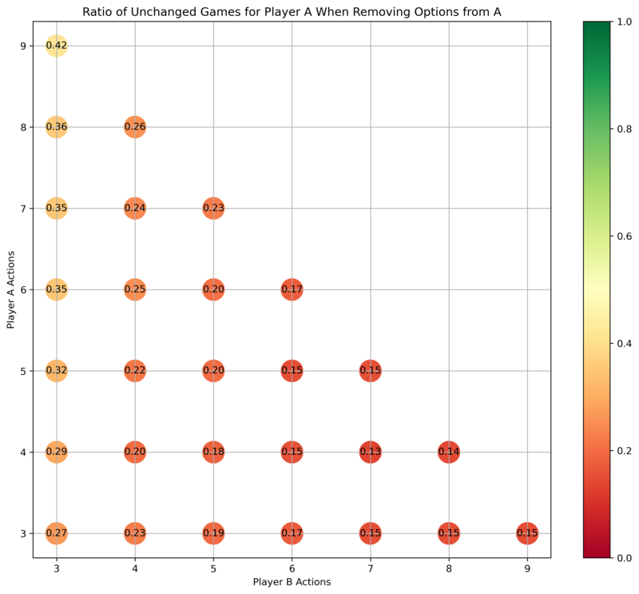
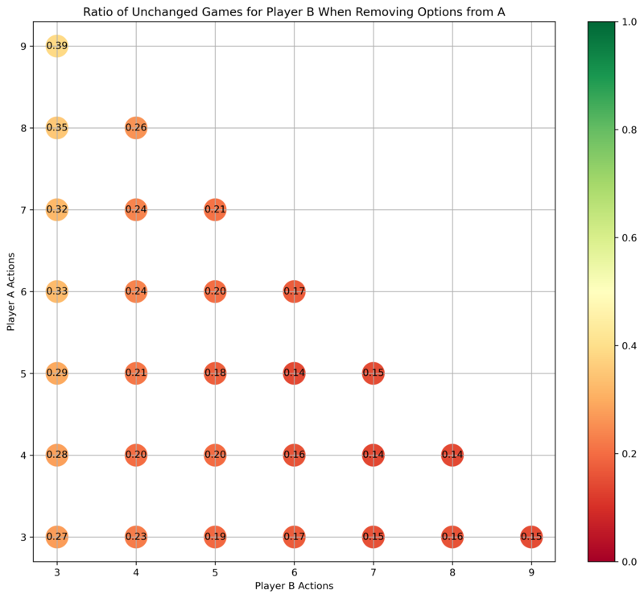
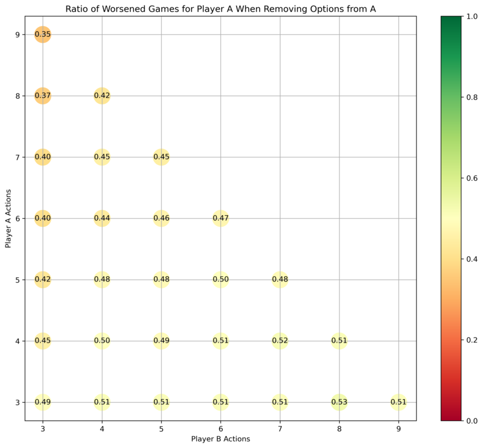
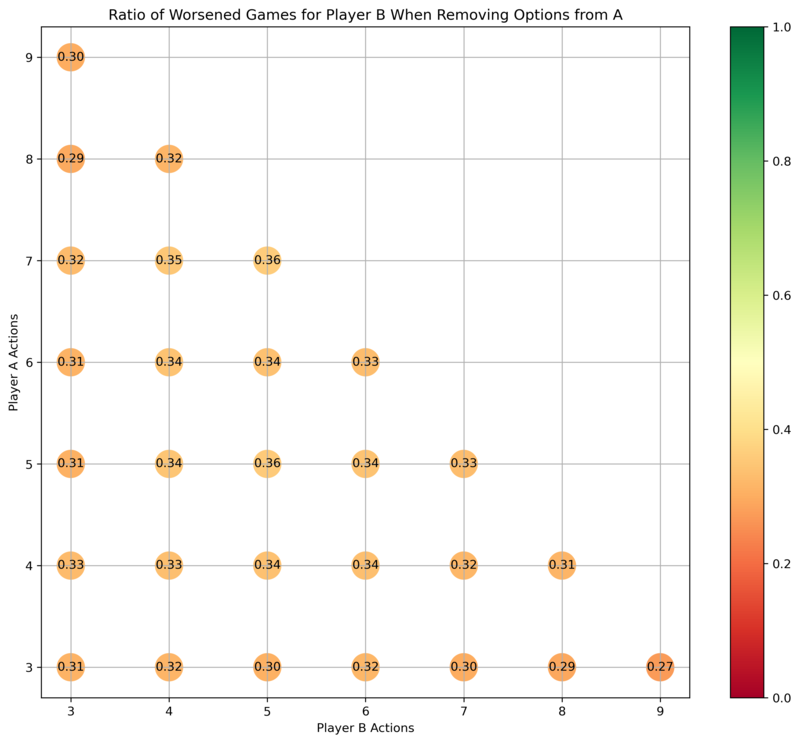

author: niplav, created: 2024-09-20, modified: 2025-02-28, language: english, status: finished, importance: 5, confidence: certain
In small normal-form games, taking away an option from a player usually improves the payoff of that player <⅓ of the time, but improves the payoffs for the other player ½ of the time. The numbers depend on the size of the game; plotted here.
There's been some discussion about the origins of paternalism.
I believe that there's another possible justification for paternalism: Intervening in situations between different actors to bring about Pareto-improved games.
Let's take the game of chicken between Abdullah and Benjamin. If a paternalist Petra favors Abdullah, and Petra has access to Abdullah's car before the game, Petra can remove the steering wheel to make Abdullah's commitment for them — taking an option away. This improves Abdullah's situation by forcing Benjamin to swerve first, and guaranteeing Abdullah's victory (after all, it's a strictly dominant strategy for Benjamin to swerve).
In a less artificial context, one could see minimum wage laws as an example of this. Disregarding potential effects from increased unemployment, having higher minimum wage removes the temptation of workers to accept lower wages. Braess' paradox is another case where taking options away from people helps.
We can determine a low-information prior on how often taking away options from a player improves their game by running a Monte-Carlo simulation.
First, start by generating random normal form games with payoffs in . Then, compute the Nash equilibria for both players via vertex enumeration of the best response polytope (with nashpy)—the Lemke-Howson algorithm was giving me duplicate results. Compute the payoffs for both Abdullah and Benjamin.
Then, remove one option from Abdullah (which translates to deleting a row from the payoff matrix).
Calculate the Nash equilibria and payoffs again.
We assume that all Nash equilibria are equally likely, so for each player we take the unweighted mean payoff across Nash equilibria.
For a player, taking away one of Abdullah's options is considered an improvement iff the mean payoff across equilibria in the original game is stricly lower than the mean payoff in the game with one option removed. Thus, one can improve the game for Abdullah by taking away one of his options, and one can improve the game for Benjamin by taking away one of Abdullah's options, or both.
I run this analysis on games with up to nine actions, leaving out games with two actions/one option in the reduced game (since nashpy requires at least two options for each player, and a player with only one option can't be really said to play the game).
For games originally of size , how often is it the case that taking an option away from Abdullah improves the payoffs for Abdullah?

For games originally of size , how often is it the case that taking an option away from Abdullah improves the payoffs for Benjamin?

Removing an option from Abdullah usually changes their payoffs, unless they had many options already.

Similarly, removing an option from Abdullah usually changes the payoffs for Benjamin, unless they had very few options.

Abdullahs payoffs are usually worsened, most often when Benjamin has many options.

Benjamins payoffs are rarely worsened by taking an option away from Abdullah.
Abdullah is most helped by taking an option away from him when both he and Benjamin have a lot of options to choose from, e.g. in the case where both have six options. If Abdullah has many options and Benjamin has few, then taking an option away from Abdullah usually doesn't help him.
Benjamin is much more likely to be in an improved position if one takes away an option from Abdullah, especially if Benjamin had many options available already—which suggests that in political situations, powerful players are incentivized to advocate for paternalism over weaker players.
One can imagine a paternalist government as a mechanism designer with a bulldozer, then—it can only remove options from people, but that hurts those people more than it helps them, unless the intervention is carefully chosen.
Code here, largely written by Claude 3.5 Sonnet.